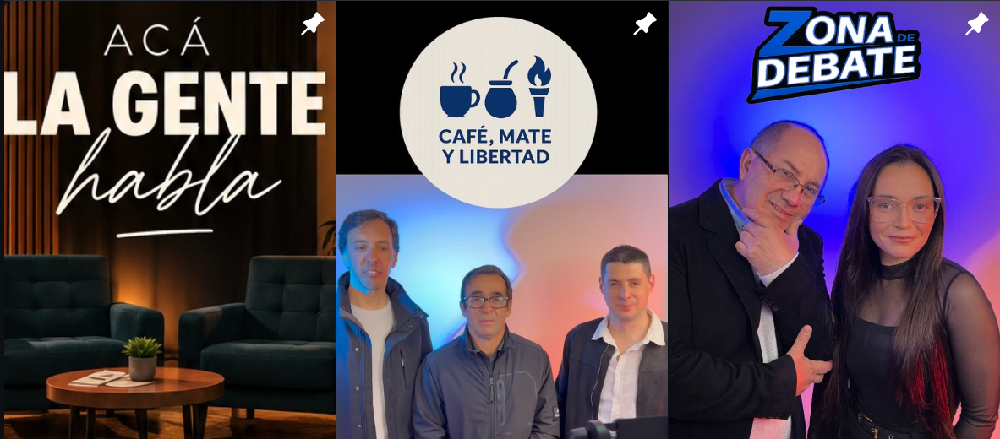

Se ve la diferencia.
Cámaras OBSBOT para tu producción de video y streaming, con encuadre automático y calidad profesional.
OBSBOTESTUDIO DE STREAMING · RADIO ONLINE · URUGUAY
Las buenas ideas merecen salir al aire. Hacé tu podcast, creá tu programa y conectá con tu audiencia desde un estudio equipado, con operador incluido y una radio que no se apaga.
EN VIVO · LAS 24 HORAS
Música, programas y voces con identidad propia. Escuchá la señal online desde acá, estés donde estés, a cualquier hora.
¿No arranca la señal? Abrí el reproductor externo (se abre en una pestaña nueva).
01 / EL ESTUDIO
El Otro Lado de la Cosa es un estudio de streaming y radio online con base en Uruguay. Tres estudios equipados, operador incluido y tecnología para que te concentres en lo que tenés para decir.
Cámaras OBSBOT para tu producción de video y streaming, con encuadre automático y calidad profesional.
OBSBOTMicrófonos RØDE y consola Aircraft para un sonido limpio, cálido y listo para publicar.
RØDE + AIRCRAFTPC de última generación con NVIDIA RTX 5060 para codificación y hardware Elgato para transmitir sin cortes.
NVIDIA + ELGATO02 / LO QUE PASA AL AIRE
Programas de lunes a viernes, conversaciones y contenido con identidad propia. Conocé a quienes están de este lado del micrófono.
Mirá los programas en YouTube (se abre en una pestaña nueva) ↗
03 / HACÉ TU PROGRAMA
Una primera idea o un proyecto que ya tiene ritmo. Encontrá la modalidad que va con vos. Consultá tarifas y disponibilidad.
Para grabaciones puntuales, entrevistas o probar esa idea que tenés en mente.
Vos elegís cuándo empezar. Consultar por horaPara darle a tu programa un lugar en tu agenda y construir su propia comunidad.
Tu contenido, con constancia. Armá tu planContanos qué querés producir y consultá por el espacio que mejor se adapte a tu proyecto.
Tres estudios, muchas posibilidades. Elegí tu espacioTU MARCA TAMBIÉN TIENE VOZ
Anunciate en nuestra radio online 24/7. Consultá las opciones de publicidad y encontremos un espacio para tu marca.
04 / PREGUNTAS FRECUENTES
Lo que más nos consultan sobre el estudio y la radio.
El alquiler incluye el uso del estudio, el equipamiento de audio y video y un operador técnico que se ocupa de la grabación o la transmisión para que puedas concentrarte en tu contenido.
Sí. El operador incluido se encarga de la técnica: micrófonos, consola, cámaras y codificación. No necesitás experiencia previa para grabar tu primer programa.
Sí. La radio online de El Otro Lado de la Cosa transmite las 24 horas y se puede escuchar desde esta misma página con el reproductor integrado.
Las tarifas y la disponibilidad se consultan por WhatsApp al 093 922 846. También podés escribir desde los botones de contacto de esta página.
Sí. La radio online tiene espacios publicitarios para marcas. Las opciones se coordinan por WhatsApp según el formato y la frecuencia que necesites.
¿LO HACEMOS SONAR?
Escribinos por WhatsApp. Hablemos de tu idea.